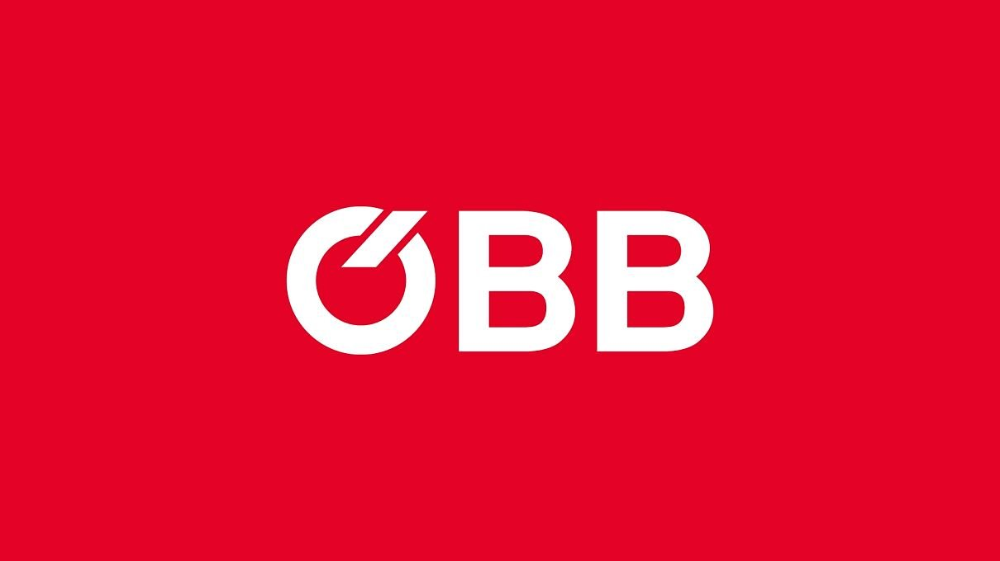
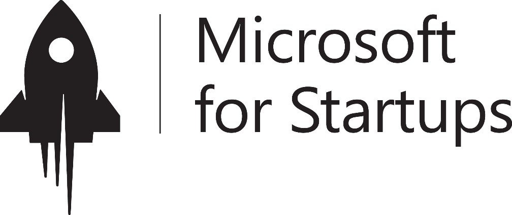
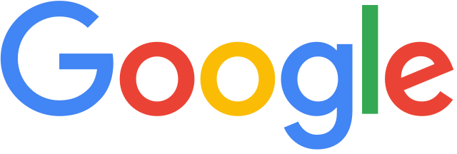
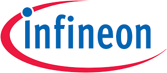
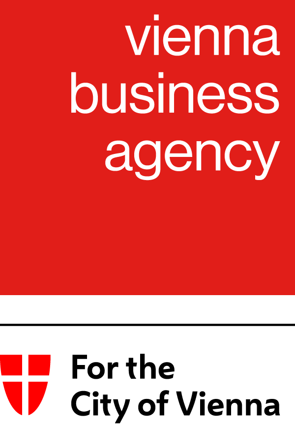
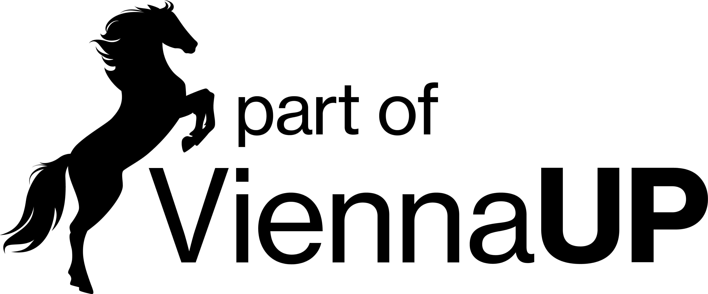
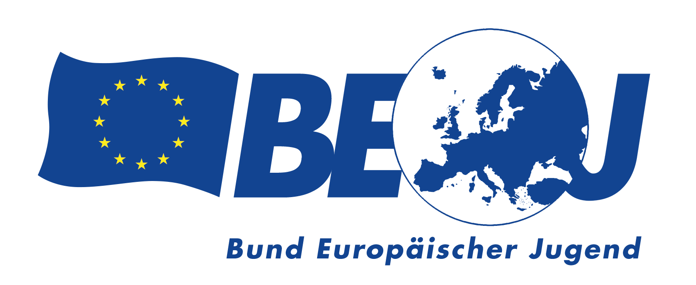
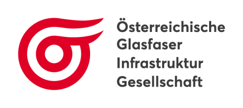

About Me
Research & Teaching
- → PhD Information Systems, WU Vienna
- → Endowed Professor, City of Vienna — Finance, ESG & AI
- → Lecturer at 10+ universities worldwide
- → 620+ academic citations
- → WU Outstanding Research Award (awarded twice)
- → ERSTE Bank Research Prize CEE 2012 — €17,880
- → #1 Business Graduate, University of Vienna 2010
Entrepreneurship & Innovation
- → CEO & Co-Founder, Sustainista GmbH
- → Vice-Chair, Association for Digital Future Education
- → Managing Director, Bäckerei Karl Bauer GmbH
- → Organizer, Europe Tech Hackathon @ ViennaUP
- → Work Package Lead — Erasmus+ L2BGreen (€1.5M)
- → Work Package Lead — FFG Flagship PACE-DPP
- → IPMA Level D certified · OekoBusiness Vienna
Sustainista — CEO & Co-Founder
- AI-powered ESG automation for enterprises
- Digital Product Passport (EU Battery & Ecodesign Regulation)
- Product Carbon Footprint (Scope 1, 2 & 3)
- FFG Flagship PACE-DPP — Work Package Lead
- Partner at dpp-austria.at
- OekoBusiness Vienna — ESG & SDG Consultant





Teaching — 10+ Universities
- WU Vienna · TU Vienna · Modul University Vienna
- FH Technikum · FH WKW · FH Wiener Neustadt
- Reykjavik University 🇮🇸 · Aarhus University 🇩🇰
- HSE Moscow · IDC Herzliya · Lauder Business School
- Topics: Innovation, AI, UX, Entrepreneurship, Project Management
- Languages: 🇦🇹 German (native) · 🇬🇧 English (fluent)
Europe Tech Hackathon — Organizer
- 48h Innovation Sprint · ViennaUP, Vienna
- ÖBB Open Innovation Factory
- 200+ participants · 4 challenges · 8+ partner organizations
- Partners: Anthropic, OpenAI, Google, AWS
- Universities: WU Vienna, TU Vienna



Skills-UP! — Vice-Chair & Co-Founder
- Peer-to-peer financial literacy for apprentices (age 14–20)
- Gamification, quiz battles, podcasts, peer-made videos
- 90% lasting behavioral change · 200+ apprentices reached
- 🏆 TOP 3 — MEGA Education Million 2025 · €200,000
- ERASMUS+ Work Package Lead (AI & Entrepreneurship)
- Selected from 80+ national initiatives
15+ Years of Experience
From academic research and banking UX to corporate innovation and entrepreneurship.
2022 – Present
CEO & Co-Founder — Sustainista GmbH
AI-powered ESG automation, Digital Product Passport, Carbon Footprint. FFG Flagship PACE-DPP.
2023 – 2025
IT Innovation & User Research Lead — Wüstenrot Technology GmbH
User research for mobile apps & web platforms, IT innovation management.
2021 – Present
Co-Founder & Vice Chairman — Verein zur Entwicklung digitaler Zukunftsbildung
Skills-UP! peer-to-peer financial literacy platform. ERASMUS+ Lead. TOP 3 MEGA Education Million 2025.
2019 – 2021
Innovation School Director — Talent Garden AT GmbH
B2B corporate innovation programs and academic study programs. Digital learning experience design.
2016 – 2019
Head of User Experience — BAWAG P.S.K.
Led UX team in agile platform development at one of Austria's largest banks. Customer journey mapping, prototyping, app design.
2011 – 2016
Research & Teaching Associate — WU Wien (IS & Operations)
PhD research in Digital Innovation & Information Security. International teaching exchanges: Aarhus, Prague. Elected Chairman of Doctoral Students.
2010
Merit Scholarship — #1 in Business, University of Vienna
Ranked first in the Business faculty. Merit-based scholarship awarded.